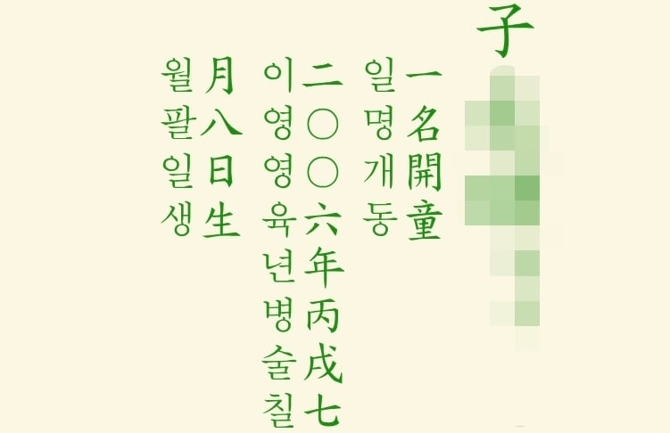

본인 아호가 '개동'으로 적혀 있음....
태명인데 아호로 등록되어 있는데다.... 아버지가 집에서 친근하게 부를때 쓰는 이름임 ㅇㅇ..
그래서 초딩때 놀림도 받았음 ㅅㅂㅋㅋㅋㅋㅋㅋㅋㅋ

본인 아호가 '개동'으로 적혀 있음....
태명인데 아호로 등록되어 있는데다.... 아버지가 집에서 친근하게 부를때 쓰는 이름임 ㅇㅇ..
그래서 초딩때 놀림도 받았음 ㅅㅂㅋㅋㅋㅋㅋㅋㅋㅋ
그런 놀림도 많이 받았어요 ㅋㅋㅋㅋㅋ
개똥아
똥쌌니
아니요
'개동' 강○석 입니다 ㅋㅋㅋㅋㅋㅋㅋ
군석아 잘 지냈냐!
개동이가 개붕이가 됐구나
올ㅋ
아명을 귀하게 지으면 귀한 사람이라고 저승사자가 모셔간다 그런 미신이 있어서 천하게 지은 거 같다
아하...! 감사합니다...!
건강하게 살거라 개똥아
감사함돠!
어릴때 저렇게 불렸을거 생각하면 귀엽다 ㅋㅋㅋㅋㅋ
지금도 저렇게 불립니다 ㅎㅎ
화목하구나 ㅋㅋㅋㅋ
설마 개똥이임...?
본명은 따로 있습니다..
군석아...
군석이가 아니고 군밤이네
족보는 왜 우종서로 쓸까
세로쓰기는 우종서가 표준이야
와 2006년생! 개똥이!
고생 많이했다 ㅋㅋㅋ
06년생?ㄷㄷ
임마 근본있누ㄷㄷ
개동개붕아
개드립 다 늙어빠진 할아비들 커뮤인줄 알았더니 06년생도 있었구나
06년생인데 아호가 있넼ㅋㅋㅋ
개동이 야호
개똥쿤!